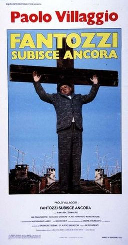

Il ragionier Fantozzi è maltrattato in ufficio, malmenato durante una riunione condominiale, umiliato culturalmente da un autostoppista puzzolente che risponde al nome di Franchino e diventa persino nonno. Peccato che il padre del nascituro, un volgare sciupafemmine romagnolo, abbia sedotto la figlia Mariangela solo per scommessa. A peggiorare il tutto ci si mettono anche le olimpiadi aziendali, organizzate da Cobram II, e le elezioni politiche. Quarto episodio dedicato al ragioniere più celebre del cinema italiano, Fantozzi subisce ancora è il secondo diretto da Neri Parenti, che non si avvale della collaborazione alla regia di Paolo Villaggio com'era stato per il precedente Fantozzi contro tutti. Nonostante il paragone con i primi due capitoli della serie diretti da Luciano Salce metta in cattiva luce il nuovo corso, le trovate surrealistiche, le zaffate crudeli e la ripetizione meccanica di alcune gag continuano a funzionare. Con l'apporto in sceneggiatura dei fedeli Leonardo Benvenuti e Piero De Bernardi, Villaggio e Parenti spingono ancora di più sulla cattiveria della maschera fantozziana, esasperando i toni e aumentando la carica catastrofica dei vari episodi: si pensi alla decisione di far abortire la figlia Mariangela che, nella sua crudele e anche fastidiosa esagerazione, finisce col mostrare una realtà ospedaliera corrotta e dedita ai peggiori commerci. L'obiettivo, a questa altezza della serie, non è tanto trovare nuovi spunti, ma cercare di far rimanere a galla un personaggio che comincia a mostrare la corda con consumato mestiere e una galleria piuttosto nutrita di personaggi secondari. Gli estimatori potranno imbattersi, tra gli altri, in Loris Batacchi, un irresistibile Andrea Roncato, o nel Dottor Zamprini Loredano detto "Jack lo squartatore", un esagitato Alessandro Haber, oppure continuare a divertirsi con i duetti tra Fantozzi e Filini, giustamente celebre il dialogo sul pesce-ratto. Riccardo Garrone interpreta il geometra Calboni, interpretato nelle precedenti occasioni da Giuseppe Anatrelli, scomparso nel 1981, alla cui memoria il film è dedicato. Insieme a Fantozzi in paradiso potrebbe essere il risultato più felice della carriera registica di Neri Parenti. From Mymovies.it
